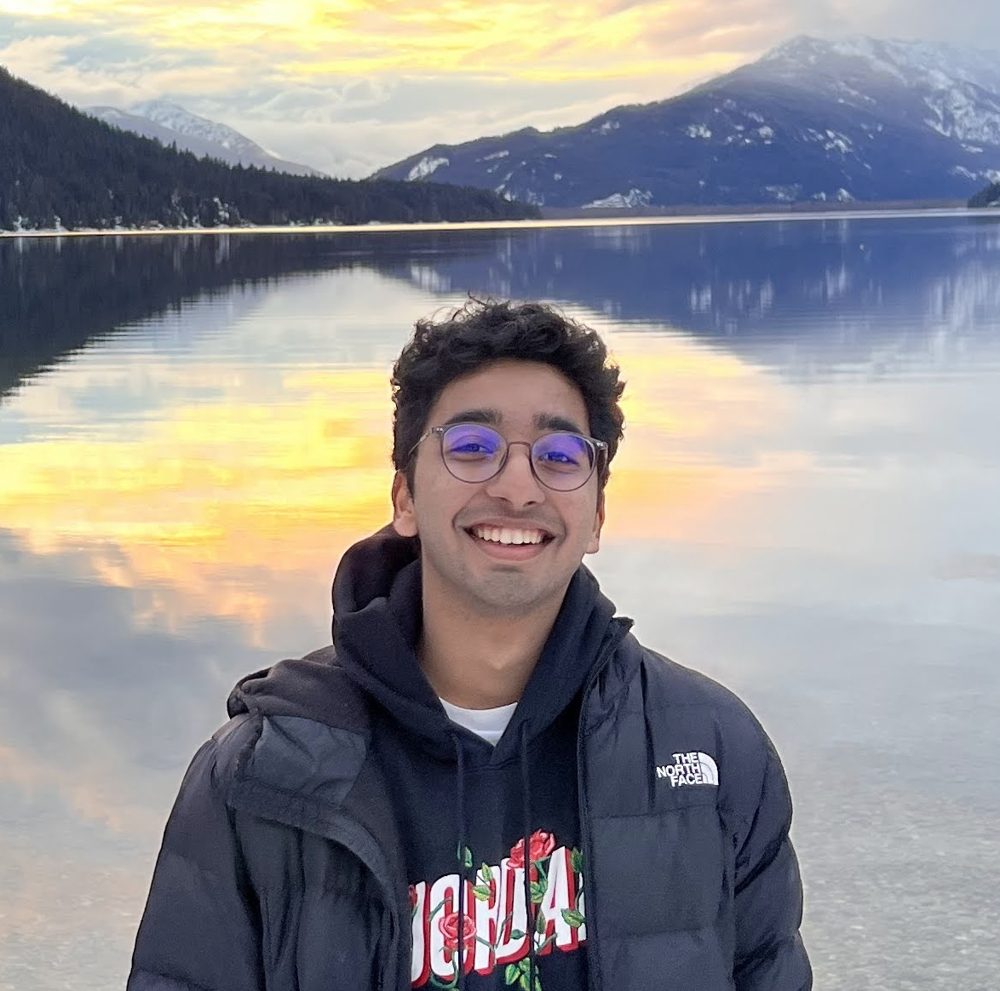

Don't Fool Me Twice: Adapting to Adversity in the Wild with Experience-Driven Reasoning
IROS · 2026

Graduate Researcher @ AirLab
Robotics Institute
Carnegie Mellon University
Hi, I'm Krrish!
I'm a Master's student at the Robotics Institute, Carnegie Mellon University, advised by Sebastian Scherer in the AirLab. My research focuses on multi-robot coordination, semantic search planning, and navigation in large, unknown environments.
IROS · 2026
AirStack is a comprehensive, modular autonomy stack for embodied AI and robotics developed by the AirLab at Carnegie Mellon University's Robotics Institute. It provides a complete framework for developing, testing, and deploying autonomous mobile systems in both simulated and real-world environments.